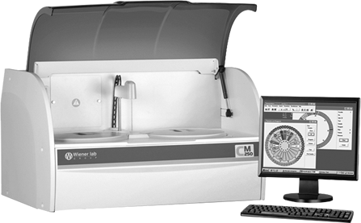

Wiener lab cm 250
Analizador automatizado para química clínica

DESCRIPCIÓN:
Nueva generación de autoanalizadores de acceso al azar (random access) ofrecen una solución flexible, con un óptimo desempeño y bajo consumo de agua. Robusto y de uso amigable, software en español, para pruebas de Química Clínica y pruebas turbidimétricas de proteínas plasmáticas y reumáticas.
Con un programa interno de Control de Calidad, posibilidad de urgencias, modo de trabajo con uno o dos reactivos y una velocidad de 230 pruebas por hora, se presenta como la solución excelente, con la mejor relación costo/prueba para laboratorios con volumen de trabajo de entre 50 y 150 pacientes por día.
CARACTERÍSTICAS:
Sistema de reactivos:
Bandeja con 48 posiciones para reactivos refrigerados por efecto Peltier hasta 12°C debajo de T.A.
Frascos de 20, 30 y 50 ml.
Volumen típico de reactivo: 200 uL.
Lector de código de barras para muestras (opcional, se cotiza modelo con CB a solicitud).
Sistema de muestras:
Bandeja con 48 posiciones.
Tubos primarios (12 x 75 y 13 x 100 mm) o copas de muestra.
Volumen programable de 2-100 uL.
Sistema de dispensado:
Dilutor con válvula Klohen® de 500 uL.
Sonda termostatizada.
Sensor de nivel capacitivo y sensor de choque.
Bandeja de reacción:
80 cubetas autolavables de 0.6 cm de paso de luz.
Volumen mínimo de lectura 200 uL.
Incubación por aire caliente (30 y 37 °C).
Unidad de lavado:
Lavador automático de cubetas de 5 pasos con secado.
Consumo de agua: < 1 L/h.
Dimensiones:
Ancho: 85 cm.
Alto: 47 cm.
Profundidad: 58 cm.
Peso del equipo: 60 Kg.
Incluye: PC, monitor plano, impresora, UPS (fuente de energía) y supresor de picos.
Registro: 3095E2012 SSA
DATOS COMPLEMENTARIOS: Para información adicional comunicarse a:
WIENER LAB.
REPRESENTACIONES LABIN MÉXICO, S. A. de C.V.
Teléfonos: (55) 5524-0771, 5200-2500
Lada sin costo: 01 800-581-4616
e-mail: contacto@wiener-mex.com
www.wiener-lab.com.ar